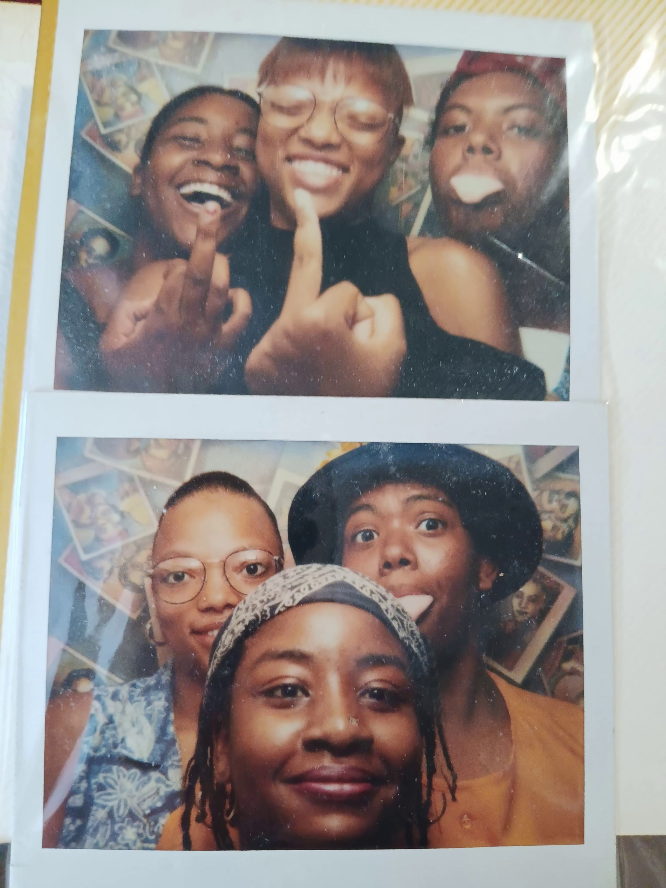
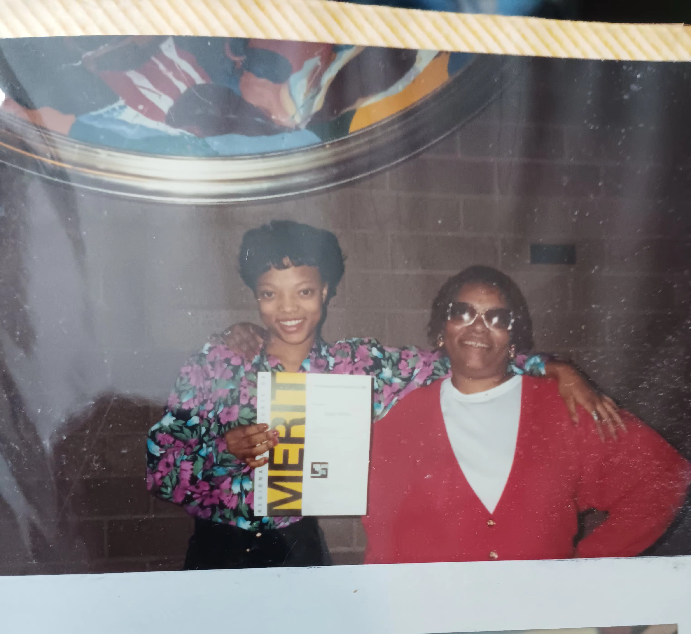
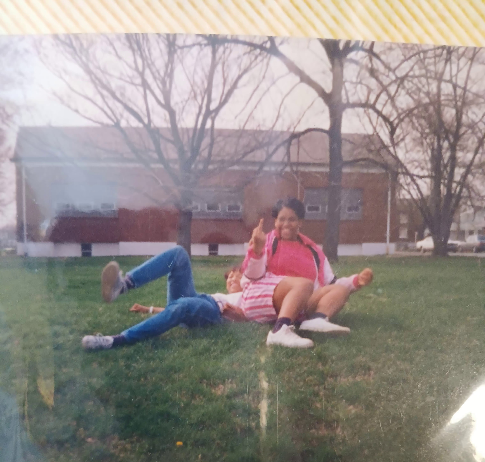

Only Girl
I was born in July 1979 to a woman who had already had 2 boys. Hmmph, big brothers. I could take 'em or leave 'em. We lived for a few years in between Louisville KY and Indianapolis, IN. Mama chose to settle in Louisville after having two more sons, one in each state. I was dead smack in the middle and my life reflected my birth placement. It seemed like being born in the middle was an automatic divider between me and my brothers. And it didn't seem to help that I was the only one who didn't have a father.
Read, Write, and Draw
I could say that not having a father caused a little toughening up of my girlie side but I'd would be lying. I would say that I was a tomboy because I have 4 frigging brothers. Duh. Cars, sports and fighting were just more interesting! It just seemed more fun to play wrestling rather than sitting on the steps wearing a frilly dress with ruffle socks. I feel Mama didn't like that she couldn't dress me up like a doll because that was the only thing I think she knew to do with a female child. Unfortunately, that just wasn't me.
There's quite a few things that "weren't me", meaning there were many characteristics that I had that didn't fit my familial mold. I was a geeky girl who liked to read, paint, draw, and collect comic books. I skipped 2 high school grades, made Dean's List and Who's Who my junior & senior semesters. I couldn't have painted a bigger NERD bullseye on my own back if I wanted to. Welp!
Childhood Dreams
I always wanted to be a mother for as long as I can remember. The first time being somewhere between 6 and 8 years old. I always felt I was alone. I wanted to have a family that wouldn't treat me bad or leave me alone. My plan was to finish high school and move into an apartment with my two best friends, Shawna & Sara, after graduating. I wanted to have my first baby while focusing on my writing and art and get accepted into a School of Arts Program.
  By 15, I had written several award winning short stories that were part of my english portfolio. I had written 2 articles published in local and national publications about teen parenting. I had artwork on display in a Louisville well-known corporate office building. I felt I was going to be fully set to begin being a mother and an adult, without worrying about my education.
Well, thats not quite how it happened IRL but the actual outcome was so much BETTER!